CudaText is a cross-platform text editor, written in Lazarus. It is fully open source, see Wiki info.
Features include:
- Syntax highlight for many languages: C, C++, Java, JavaScript, HTML, CSS, PHP, Python, XML etc. About 180+ syntax lexers exist already.
- Code folding.
- Code tree structure (SynWrite style).
- Multi-carets.
- Multi-selections.
- Find/Replace with regex.
- Plugins in Python language. Plugins can do lot of things.
- Configs in JSON. Lexer-specific configs.
- Tabbed UI.
- Split each tab.
- Split view for 2/3/4/6 files.
- Simple auto-completion (fixed list) for some lexers.
- Command palette (ST3 style).
- Minimap (ST3 style)
- Micromap.
- Show unprinted whitespace.
- Support for many encodings.
- Customizable hotkeys.
- Binary/Hex viewer for files of unlimited size.
- Smart auto-completion for HTML, CSS.
- HTML tags completion with Tab-key (Snippets plugin).
- HTML color codes (#rgb, #rrggbb) underline.
- Show pictures (jpeg/png/gif/bmp/ico).
Gallery
Multi-selections, Replace dialog at bottom
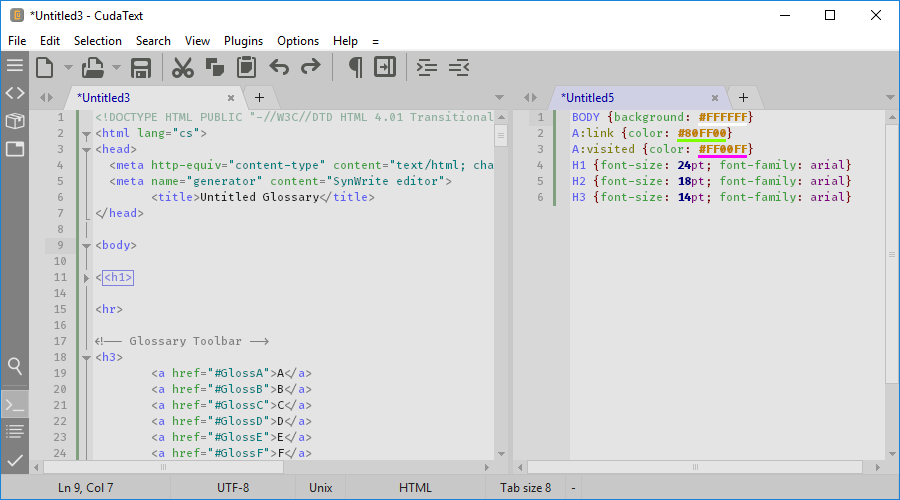
2 groups shown
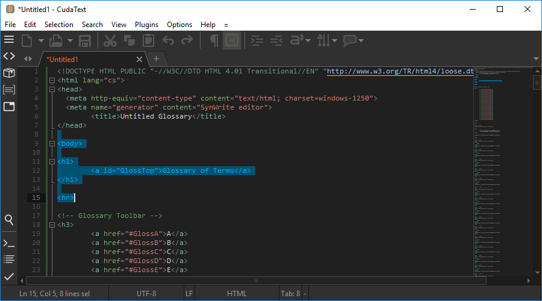
Dark theme, Minimap, Custom icons

3 groups shown, picture opened

Tree panel for Pascal, Find dialog
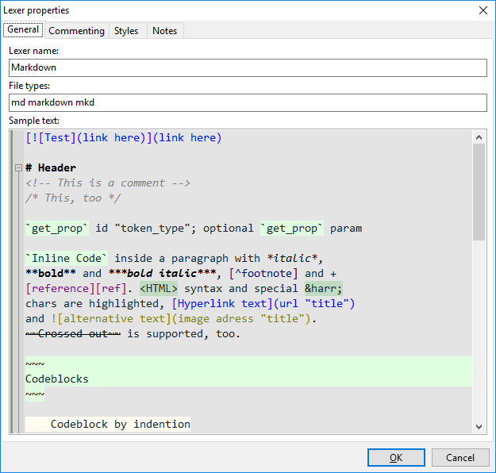
Lexer properties dialog

Lexer library dialog

Auto-completion for CSS
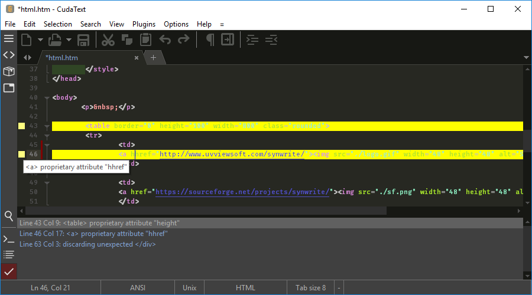
CudaLint acts on html file
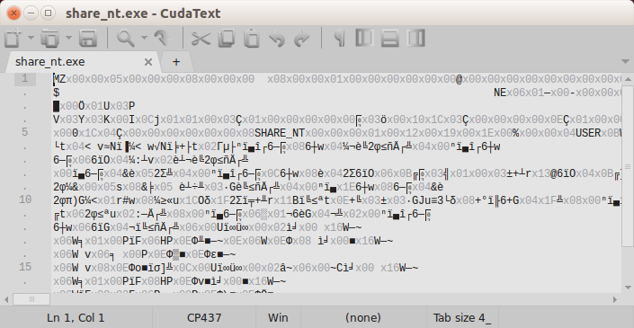
Can edit/save binary files w/o data loss
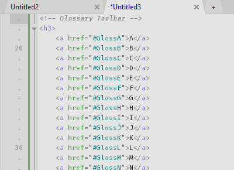
(gif) Multi-carets, multi-selections in action
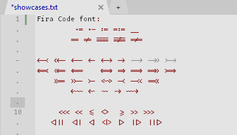
(gif) Font ligatures with Fira Coda font
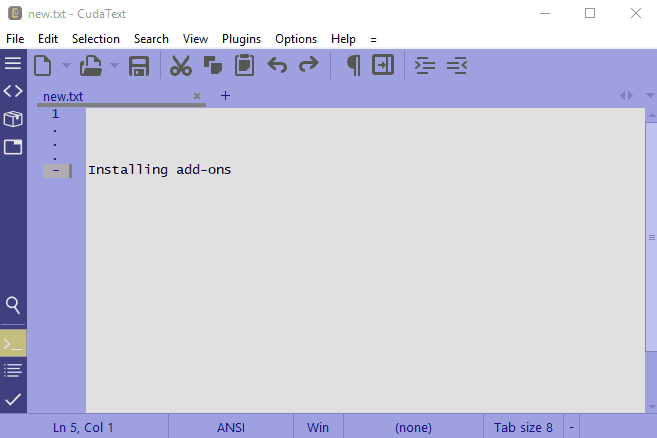
(gif) How to install add-ons, e.g. Filter Lines
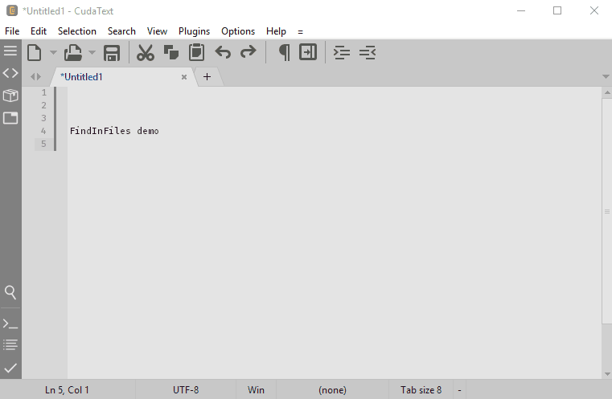
(gif) FindInFiles plugin in action
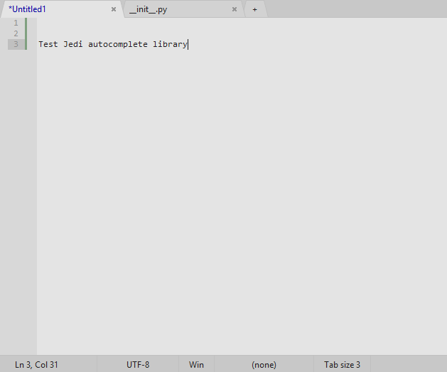
(gif) Python Intel plugin, based on Jedi library
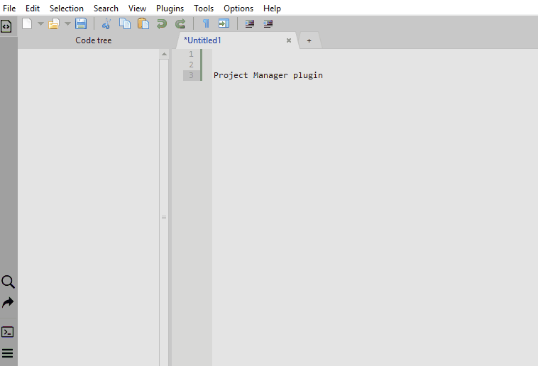
(gif) Project Manager plugin
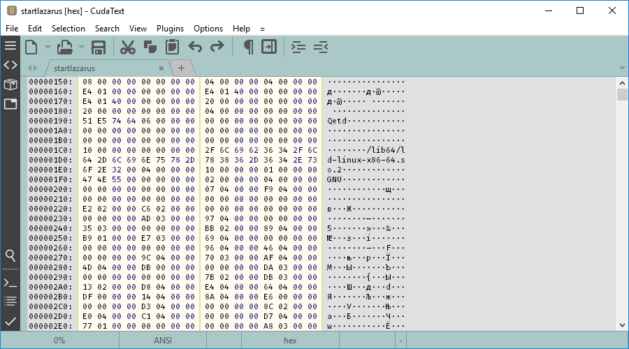
Internal binary/hex viewer
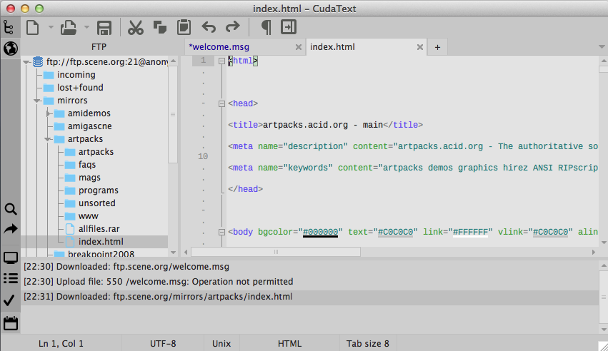
Mac version, FTP plugin opened
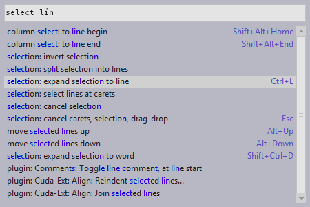
Sublime-like commands list, with 100's of commands
Powerful features implemented as plugins
- Addons manager
- Find in files
- Snippets
- External tools
- Project manager
- Session manager
- Macro manager
- Spell checker
- FTP panel
- Linters support (CudaLint)
- Brackets highlight, go to pair bracket
- Highlight all occurences
- Color picker
- Insert date/time
- Formatters for HTML/ CSS/ JS/ XML/ SQL
- Tabs list in sidebar
- Create backup files
- Menu configurator
- and more...
Configs
- Call menu item "Settings-default" and you'll see Default config. Copy any lines to config called by "Settings-user" and edit lines in this User config.
- Lexer override config: settings for single lexer only. E.g., if you open Pascal file, lexer-override for Pascal is read after user config.
- File types config: you can specify mapping between file types and lexer names. Such mapping exists in lexer-library, this config overrides it.
- Hotkeys config: hotkeys dialog allows to customize hotkeys for all program actions.
- Color themes: color editor dialog allows to customize colors and save them to a theme file.
More info
- Find documentation at the CudaText Wiki.
- Shareware Pro has reviewed our program, as follows: CudaText is a solid and stable alternative to carry out all kinds of software projects, especially Web. In our tests, the program worked correctly and also proved to be simple to handle on computers even with minimal hardware resources. Check the full review.
- Disclaimer: word "cuda" is a Serbian word, it means something nice in this language.